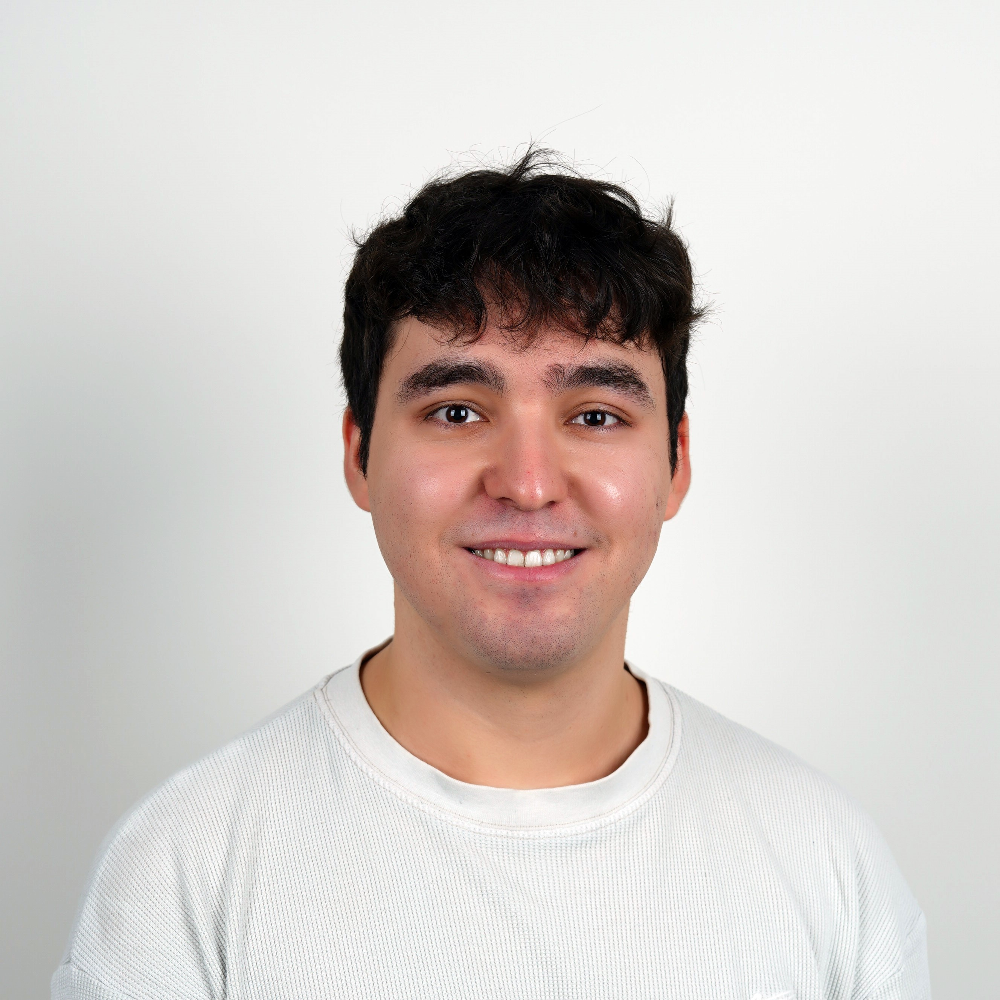

About Me
Hi, I’m Deniz — a master's student in Nanotechnology and Nanomedicine, working in the fields of quantum optics, photonics, and scientific communication. With a background in electrical and electronics engineering, I specialize in simulations (FDTD, MATLAB), LaTeX typesetting, and translating complex scientific ideas into clear insights.
I'm currently collaborating on quantum-enhanced sensing research and offering freelance services in science editing, academic writing, and physics tutoring.
📄 Download CVPortfolio
- FDTD Simulation of Plasmonic Bowtie Antenna (MATLAB)
- Scientific Poster: Quantum Illumination
Services
- Scientific & Technical Writing (English/Turkish)
- Physics & Engineering Tutoring (High School to Undergrad)
- Simulation & Circuit Modeling (MATLAB, LTSpice)
Contact
Email: denizerenmol@gmail.com